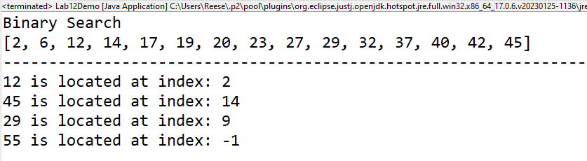

Lab 12: Binary Search
Due Date and Submission Requirements
- Due Date: Thursday, November 30th at 11:59 p.m.
- Partner Information: This is an individual assignment. You are allowed to collaborate with other students, but each student must submit their individual, independent solution.
- Submission Instructions: Submit your Lab12Demo.java file to the appropriate D2L dropbox.
The goal of this lab is:
- Implement binary search in java
Background Information
Binary Search (as discussed in the lecture for Wednesday November 29th) is defined as a searching algorithm used in a sorted array by repeatedly dividing the search interval in half. The idea of binary search is to use the information that the array is sorted and reduce the time complexity to O(log N). In this approach, the element is always searched in the middle of a portion of an array.
Directions
Using Lab12Demo.java as a starting point, you will implement binary search by filling in the body of the binary_search method. You cannot modify anything in the main() method or add any other methods. If the middle element is smaller than the target value, you eliminate the left half of the array, and recalculate the mid point. If the middle value is greater than the target value, you eliminate the right half of the array, and recalculate the mid point.
the binary_search method takes an array, and a integer value to search for. This method needs to return the index of search value. If the value is not in the array, the method should return -1.
We did this algorithm in class on 11/29. You can quite literally copy and paste it from the class notes. This is a really easy assingment and should be a freebie.
Starting Code
Output
When you run your program, your output should look exactly like this: sample output.

Grading (10 points)
- 10 points- binary search is implemented correctly